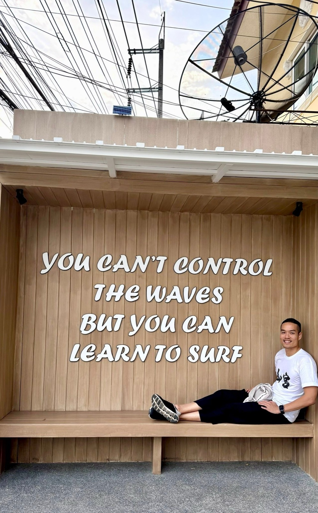
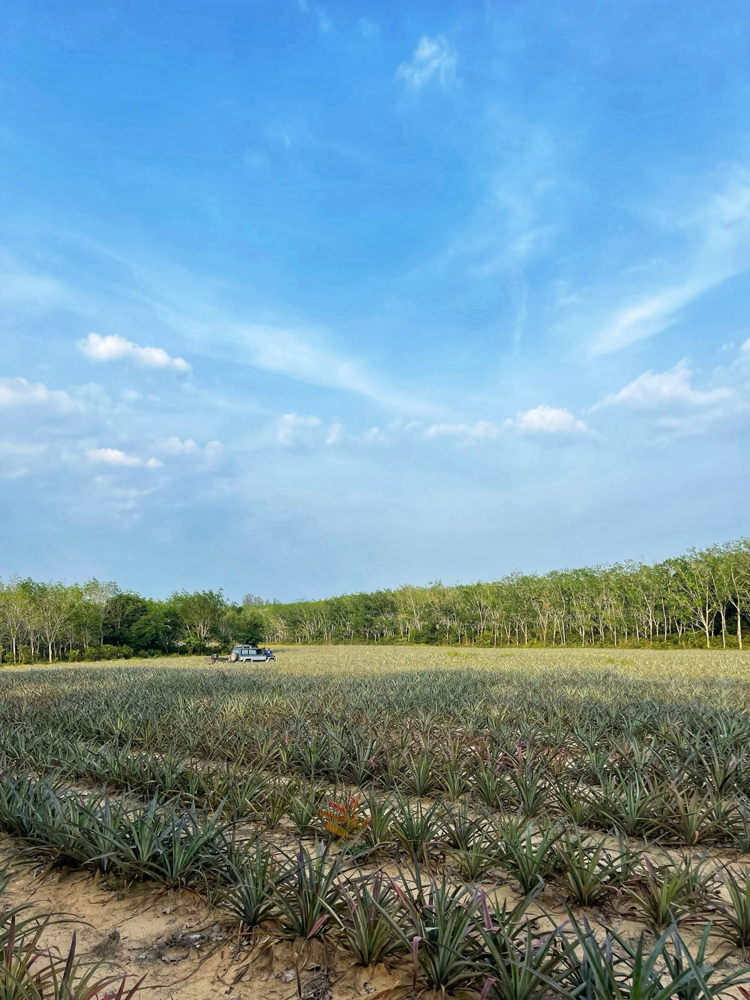
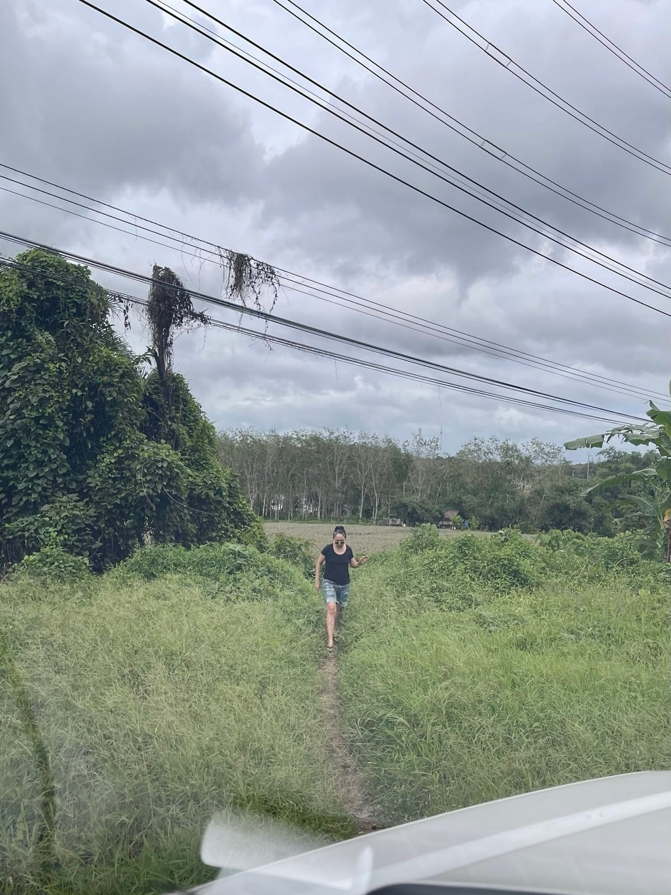

2568 · สังคม · บันทึกย่อย
9 ปีทำงานกับพี่สาว บทเรียนจาก "มารไม่มีบารมีไม่เกิด\



You can’t control the waves 🌊
But you can learn to surf 💪
จากมูลค่า 200+ มุ่งสู่ 2,000+ 🔥
9 ปีที่ได้เริ่มทำงานกับจี้มา เป็นเวลามากพอที่จะบอกได้เต็มปากว่า จี้เป็น #dreamcatcher ตัวจริง มองโลกตามจริง ตั้งเป้าอะไรแล้ว ลงมือทำแบบกัดไม่ปล่อย ลงมันทุกรายละเอียดด้วยตัวเอง #ใครไม่ทำจี้ทำเอง คำพูดนี้ได้ยินมาตลอด 9 ปีที่ทำงานมา 💪
และตลอด 9 ปีที่ผ่านมา มีบททดสอบมากมายผ่านเข้ามาในแต่ละวัน จนเมื่อถึงทางตันคิดไรไม่ออก จี้ก็มีอีกคำที่เตือนใจอยู่เสมอ #มารไม่มีบารมีไม่เกิด 🔥 ไม่ทางใดก็ต้องมีสักทาง นึกได้ก็ลุยมันต่อ ทำให้สนุก เกิดมามีชีวิตเดียว (แต่ขอมารน้อยลงซักหน่อย จะดีมากเลย 😅)
มาวันนี้มีโอกาสใหม่เกิดขึ้นอีก จากเริ่มซ่อมบ้าน ทำร้าน ขายข้าว ขายน้ำ ขายของชุมชน ไกด์จำเป็น ขับรถส่งแขก ออกบู้ท ตะโกนโหวกเหวก จนทำน้ำหอม เวิร์คช้อป เชฟเทเบิ้ล จนไปบวกรวมร่างกับเพื่อนๆ ไหลมาเรื่อย จนวันนี้ได้โอกาสครั้งใหญ่จากจี้อีกครั้ง 💪🔥
โปรเจคระดับพัน ลบ. กับบ้าน 34 หลัง บนที่ 49.5 ไร่ ได้เห็นตั้งแต่ช่วงตั้งไข่ กระบวนการคิด การบ้านต่างๆ ที่ทำ ก่อนออกมาเป็นบ้านราคาหลักสิบหลักร้อย ทั้งหมดเกิดขึ้นเร็วมาก น่าจะราวๆ 3 เดือน 🔥
คือตอนเห็นราคาเมื่อเดือน กพ ที่ผ่านมา ได้แต่คิดว่าใครจะซื้อ ภาพวันเริ่มทำบ้านอาจ้อ ตอนที่มองไม่เห็นทางออกใดๆ กลับมาเต็มๆ แต่เรา #ต้องรอด พอได้เริ่มลงมือทำ ช่วยกันบอกต่อ ช่วยกันขายแบบคว้าทุกโอกาส ด้วยความตั้งใจเดียว คือ ต้องช่วยจี้ขายให้ได้ 💪✨
วันนี้ผ่านไปเพียง 2 เดือน ลูกค้าโอนแล้ว 5 หลัง ทั้งที่โครงการยังไม่ทันเปิดตัว ได้แต่บอกว่า ปาฏิหาริย์เข้าเต็มๆ แล้ว 😇✨
สุดท้าย เราบังคับคลื่นลมไม่ได้ แต่เราจำเป็นต้องฝึกฝนตัวเองให้อยู่รอดกับคลื่นลมนั้นให้ได้ และคลื่นลมนั้น ก็จะไม่มีวันหมด จนเรากว่าจะจากโลกนี้ไป ❤️
ดีใจที่จี้ด่ารัวๆ นะ และจี้ต้องด่ากันอีกยาวๆ 😆
ดีใจที่ได้ร่วมงานกับทีมงานทุกคนครับ 🙂
ไม่รู้หลังจากนี้จะเป็นไงต่อ แต่จะตั้งใจทำให้ดีที่สุดเหมือนทุกๆครั้งที่ผ่านมา 💪✨
ปล งานนี้ไม่ใช่แค่ฉีดน้ำหอมลงแดง 98 ทีมขายเรียกกันได้เลยว่า อาบได้อาบแล้ววว 😆❤️
ใครสนใจช่วยจี้ขายบ้าน แจ้งมาได้เลยน้า 🏡✨
#punyisaacacia 🏡
#longdaengPhuket 🧧
#tohdaengPhuket 🧧
#บ้านอาจ้อ ❤️